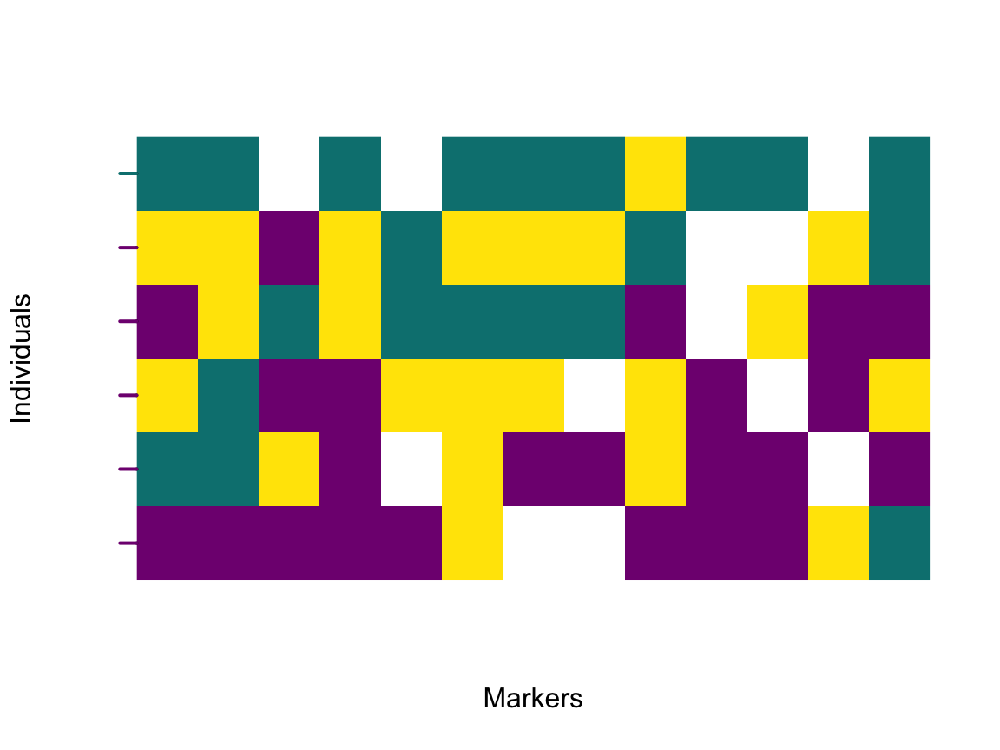

Chapter 4 Multiple compartments with different ploidies
Some genomic compartments differ between individuals in their ploidy. For example, markers located on chromosome X in mammals will be diploid in females, but haploid in males. Ploidy differences between individuals influence calculation of the hybrid index, which in turn has an effect on the diem analysis.
To set up the diem analysis with multiple compartments, the markers with different individual ploidies
must be stored in separate files. The file analysed in the Quick start chapter could contain
markers from autosomes and an additional file will contain markers from an X
chromosome, with individuals 2 and 6 being males. The respective ploidies for the second genomic
compartment
will be c(2, 1, 2, 2, 2, 1, 2).
Arguments files and ploidy will need to reflect the information, taking care that the order of filenames
corresponds to the order of elements in the list of ploidies. diem cannot check that the order of the
elements
is correct, only that the information is in the correct format.
filepaths2 <- c(system.file("extdata", "data7x3.txt", package = "diemr"),
system.file("extdata", "data7x10.txt", package = "diemr"))
ploidies2 <- list(rep(2, 7),
c(2, 1, 2, 2, 2, 1, 2))
CheckDiemFormat(files = filepaths2,
ChosenInds = samples,
ploidy = ploidies2)
# File check passed: TRUE
# Ploidy check passed: TRUE
# Set random seed for repeatibility of null polarities (optional)
set.seed(39583782)
# Run diem with verbose = TRUE to store hybrid indices with ploidy-aware allele counts
res2 <- diem(files = filepaths2,
ploidy = ploidies2,
markerPolarity = FALSE,
ChosenInds = samples,
nCores = 1,
verbose = TRUE)Plotting polarised genomes from multiple compartments requires separate import of the compartment data.
The polarities in the res2$markerPolarity element are combined across all compartments, and extracting
them requires knowledge of the number of markers in each compartment. Alternatively, the marker polarities
from each compartment can be extracted from the list in the res2$PolarityChanges element.
# Import each compartment into a list
genotypes2 <- list(importPolarized(file = filepaths2[1],
changePolarity = res2$markerPolarity[1:3],
ChosenInds = samples),
importPolarized(file = filepaths2[2],
changePolarity = res2$markerPolarity[4:13],
ChosenInds = samples))
# Bind compartment genotypes into one matrix
genotypes2 <- Reduce(cbind, genotypes2)
# Load individual hybrid indices from a stored file
h2 <- unlist(read.table("diagnostics/HIwithOptimalPolarities.txt"))
# Plot the polarised genotypes
plotPolarized(genotypes = genotypes2,
HI = h2[samples])